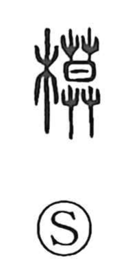

模

Uncategorized
Kun: | On: mo
pattern ・ model ・ mold
Explanation
A phono-semantic character with 莫 as the sound element and the wood sign indicating a form made in material, 模 originally evoked a mold or pattern fashioned from wood. The Shuo Wen glosses it as “law, rule,” pointing to the idea of a normative model and giving rise to the sense seen in 模範, an exemplary standard. 範 itself depicts a bamboo template that covers from above, a tangible image of a guide or mold. In the related hand-based graph the root idea is feeling one’s way by hand; from this graphic family, 模 also came to mean to take something as a pattern—to copy or follow it.